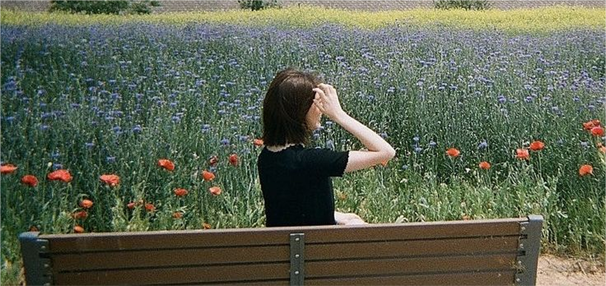

Seoul
Jihoon Park, CMD year 2
I love design, but group projects were hard at first. Everyone had opinions, everyone talked over each other - I didn’t grow up with that. At home, we wait. We listen. Here, silence is awkward. It took me a while to adjust. But now, I actually like that people say what they think. It makes things faster, clearer. What helped me most was meeting students outside of class - going to CMD events, game nights, even karaoke once. That’s where I really started feeling part of something. I still miss Korean food, and sometimes I just need to call my mom. But CMD feels like a second home now.
Jihoon Park
- Lives in Diemen
- Loves ramen & drawing comics
- Instagram: @jihoon.park
- WhatsApp: +31 6 12345678